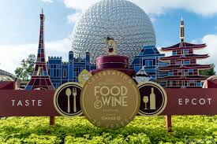
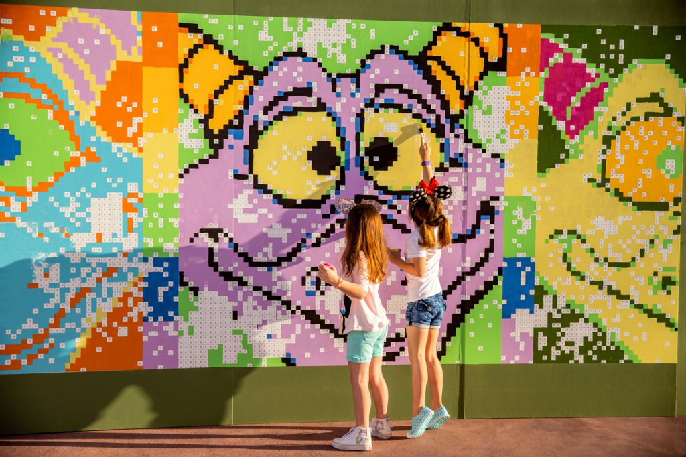

Festivales en Disneyland
| Ir a inicio |
| Ir a canciones |
| Ir a Platillos |
| Ir a vestimenta |
| Ir a Formulario |
Taste of Epcot International Flower & Garden Festival
está floreciendo del 3 de marzo al 5 de julio!
Disfruta en un evento primaveral anual que rebosa de jardines vibrantes, sabores frescos, lo mejor en entretenimiento y mucho más.
Taste of Epcot International Food & Wine Festival
Haz un recorrido culinario por 6 continentes… ¡y más allá!

Taste of Epcot International Festival of the Holidays
del 27 de noviembre al 31 de diciembre de 2020.
con las tradiciones navideñas divertidas de nuestras 11 naciones de World Showcase, te ofrece las vistas, los sonidos y los sabores maravillosos de la temporada, tal como se celebra en varias culturas del mundo.
Taste of Epcot International Festival of the Arts
Del 8 de enero al 22 de febrero de 2021
Artes culinarias, artes escénicas, artes visuales y diversión para todas las edades.
